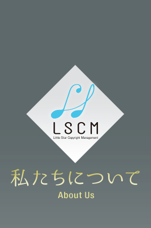
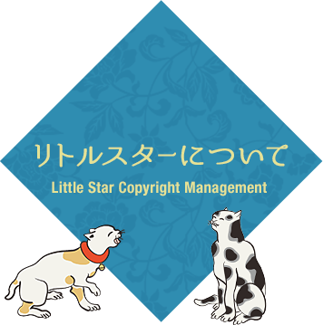
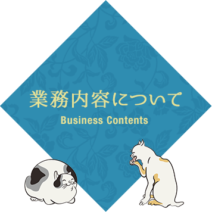

リトルスターは1975年創業の音楽著作権管理代行会社です。40年以上の長きに渡りクライアント様にご愛顧いただいております。
ありがたいことに、クライアント様から新規のクライアント様をご紹介いただくことも多々あります。
インディペンデントのこぢんまりとした会社ですが、手前どもの業務に誇りと自信を持っており、クライアント様のお力になれるよう日々努力しております。
クライアント様が創作活動に専念できますよう煩雑な業務を弊社が代行しております。
Little Star was established in 1975 as a music publishing company and we greatly value the clients’ patronage.
Thankfully, we frequently reach an agreement with a new publisher and/or a writer introduced by our current clients.
We are an independent company, being proud and confident of our achievement and are making further efforts to serve our clients.
On behalf of our clients, we do not hesitate to take care of their requirements so that they can focus on matters of higher priority.

仕事の流れとしましては、クライアント様の作品を弊社が信託しております一般社団法人日本音楽著作権協会（JASRAC）に1曲ごとに作品登録することから始まります。
クライアント様の作品がTVで流れたりなどしますと、著作権使用料が発生します。その著作権使用料がJASRACから弊社へ分配された後、クライアント様へ再分配致します。
作品登録と再分配が主な仕事ですが、その他クライアント様の作品を利用したい方との利用許諾のやりとり、クライアント様やJASRACからのお問い合わせへの調査・対応など様々ございます。
As the lines of work, we register clients’ work one by one with JASRAC that entrust us.
When the clients’ work is aired on TV, radio or any broadcasting etc., a copyright fee incurs. After distributing this copyright royalty from JASRAC to us, we in turn redistribute it to the clients concerned .
Our main responsibility is to register the work and redistribute the royalty. Regarding our other duty, we license a user to utilize our song on behalf of our publisher and/or writer, or we respond to inquiries or request an investigation from the clients.
クライアント様のウェブサイトをこまめにチェックするなど、常に情報を集め、新曲の情報などがありましたら漏れなくすぐにクライアント様に確認を行うなど、丁寧なアップデートをするよう努めております。
東南アジア地域、ヨーロッパ地域にも提携会社がありますので、そちらの地域での著作権管理も可能でございます。
こぢんまりとした会社のため、「よいと思ったことはすぐ実行する」など、フットワーク軽くスピーディーに行動できます。また少人数経営のため、情報の共有や意思の疎通もスムーズです。
何より「音楽が好き」という気持ちが社員一同にございますので、各クライアント様の音楽を大事に丁寧に管理させていただいております。
We are always making utmost efforts to be update for the clients. We constantly check their websites and collect their information.
If there is any new song information, we obtain confirmation ASAP without fail.
We have tie-up publishing companies in European and S.E Asian territories and it is possible to represent the copyright of the works in those territories.
As one of the merits of an independent company, we are active and our motto is “carry out quickly what we think is good”.
Above all, we love music and we highly value and proudly represent our clients’ songs.
Photo by Mark Reay
有限会社リトルスター・コピーライトマネージメント
代表取締役 やすちえこ
〒153-0064 東京都目黒区下目黒5-3-13-302
tel. 03-3792-9595／fax. 03-792-9595／mail. info@littstar.co.jp
Little Star Copyright Management Inc.
CEO Chieko Yasu
5-3-13-302 Shimomeguro Meguro-ku, Tokyo 153-0064, Japan
mail. info@littstar.co.jp